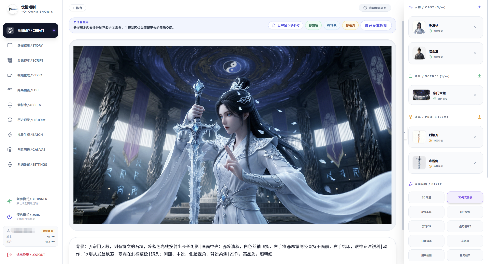
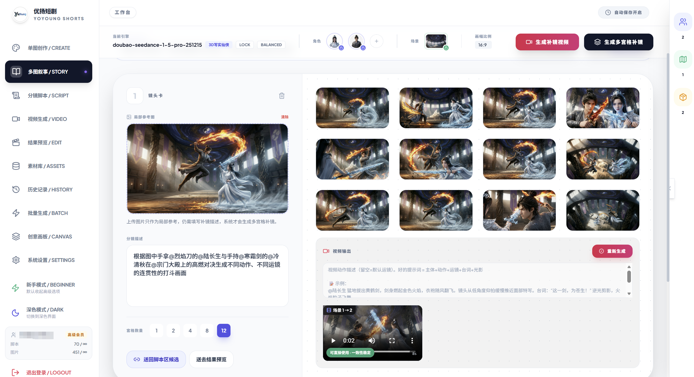
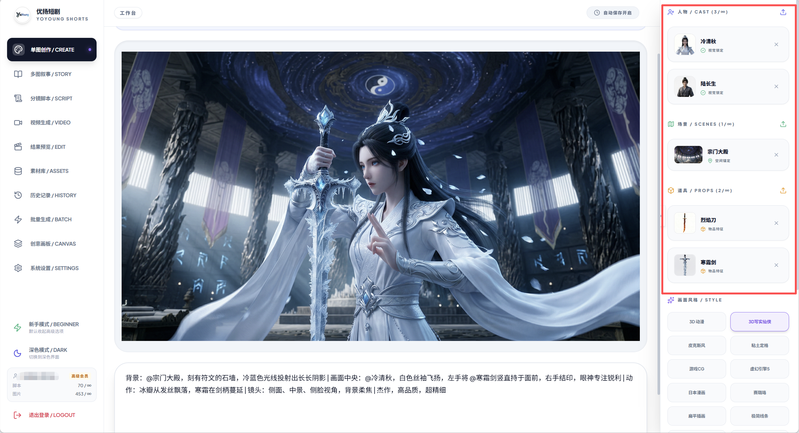
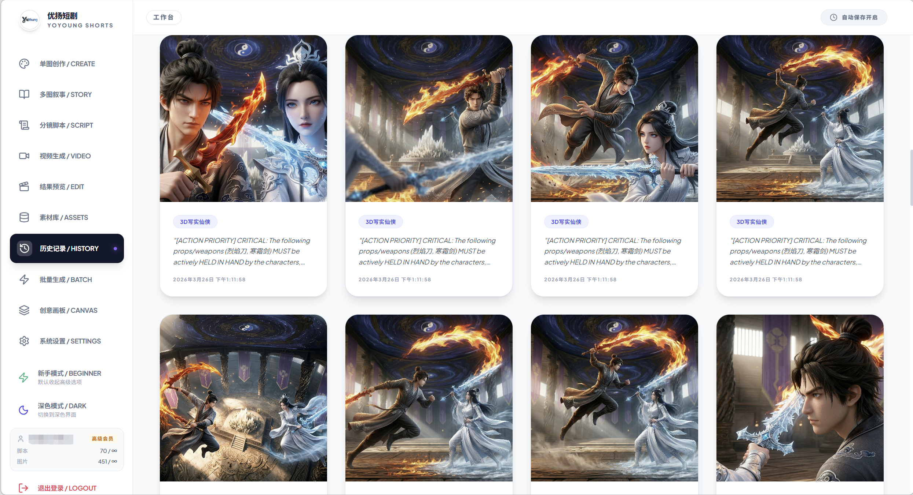
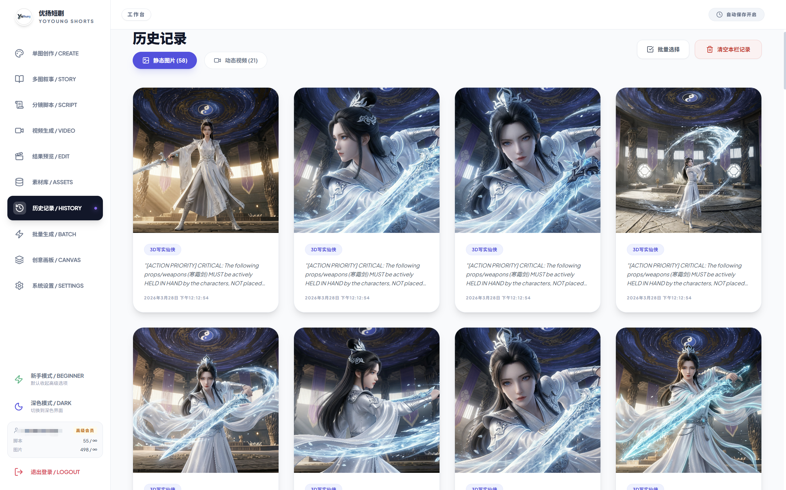
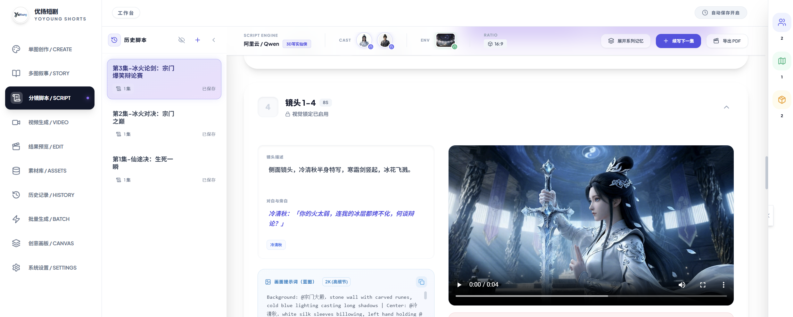
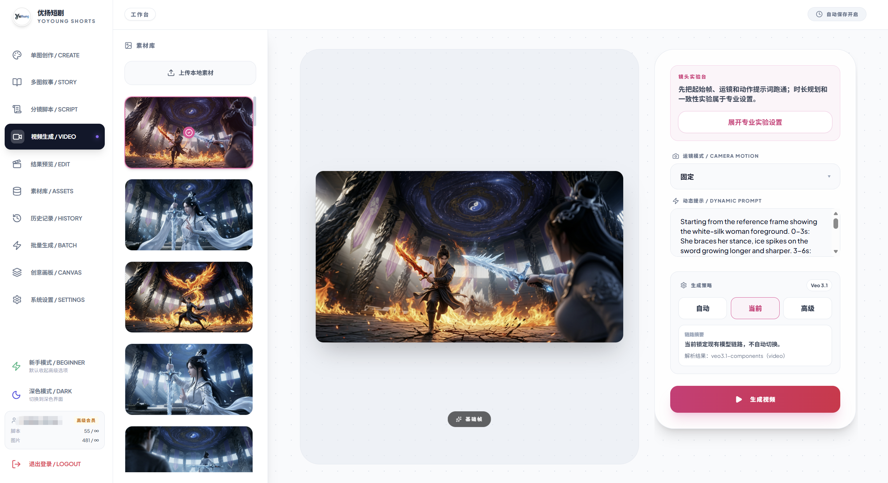
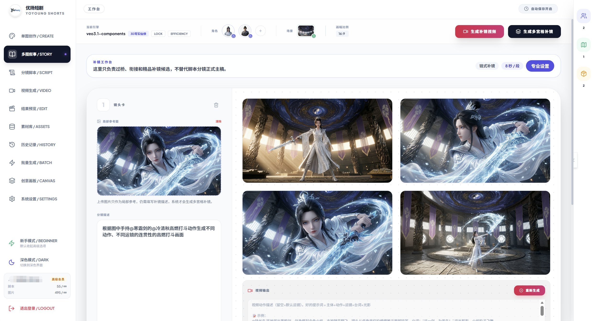

Create：从想法进入创作起点
用户不必先准备复杂提示词。这里更像一个“灵感起稿区”，把一句想法推向后续可继续扩展的内容链。
YoYoung Shorts 优扬短剧不是单点模型入口，而是一套把角色、场景、道具、分镜脚本、图片和视频串成连续工作流的 AI 短剧工作台。

很多创作者真正卡住的地方不是模型数量，而是提示词门槛高、图片和视频链路断开、角色和场景在连续创作里无法稳定延续。
首批展示重点聚焦资产逻辑、图片一致性、分镜脚本到视频的闭环能力，并把每个功能区说清楚。

用户不必先准备复杂提示词。这里更像一个“灵感起稿区”，把一句想法推向后续可继续扩展的内容链。

资产中心不是摆设。角色、场景、道具会持续进入后续生成流程，这也是它区别于普通出图工具的核心逻辑。

不是重复同一张图，而是把一个剧情段落组织成多张连续画面。角色关系、场景氛围和剧情节奏会持续延续。

历史记录不仅是归档区，也能直接看出同一角色在不同镜头、构图和动作下的稳定延续，这是当前最成熟的能力之一。
分镜脚本不是终点，它可以继续连接图片与视频，形成完整创作闭环。

脚本、画面和视频结果可以同屏出现，更容易理解这不是只写文案，而是一条可继续执行的分镜工作流。

它不是单一结果页，而是一个能继续处理脚本、视频和音频内容的工作台。这一块更适合放在中段，而不是抢首屏。

这里展示的是视频功能区本身。它承接前面的图片和提示，把静态结果继续推进到视频阶段。
历史记录里能直接看到可回看、可比较、可继续延展的结果沉淀。这里更适合使用更完整、更清晰的历史图片。
不是只堆截图，而是把主要功能区的价值点解释清楚。
从一句想法进入创作，不需要先准备复杂提示词。更适合作为故事和角色的起稿入口。
把一个剧情段落组织成多张连续画面，而不是简单重复同一张图，适合呈现剧情推进和镜头变化。
自动组织出系列化分镜脚本，并继续连接图片和视频，是把灵感变成可执行镜头的关键区。
承接图片和脚本结果进入视频生成，不让创作停留在静态图片层。这里更适合重点展示工作台本身。
角色、场景、道具作为锚点持续进入后续工作流，是图片一致性和连续创作的重要基础。
图片和视频结果都会沉淀下来，方便回看、复用和继续扩展，也更能说明这是一套创作系统。
相比 GIF，短视频更适合展示这类连续工作流，也更清楚。
YoYoung Shorts 优扬短剧由独立开发者持续构建和迭代。重点不是堆模型数量，而是把真实创作过程组织成更顺畅的工作流。
Built independently by a solo developer, and continuously refined around real creative workflows.